Carrie, a tragedy
A few weeks ago, I read Stephen King's Carrie for the first time. The 1974 novel, was a fantastic. I have only read It and The Shining from King, and I loved those two. This one only came to confirm that he can write fascinating stories with great characters that linger in my herad for days asfter I've read them.
Coincedentally, the newest adaptation of the story was just a few days away so I took the oportunity to watch every adaptation of the story (on screen, I haven't see the musical) and try to give my thoughts on each of them. I have this little flicker of a memory of seeing of the final scene of one of the Carrie movies as a kid. I remember watching a girl drenched in blood tossing a car using telekinesis but I don't know wich version it was. I am curious to see how this story holds up to modern adaptations.
I ended up taking a little more time on the 2026 adaptation. At that point I figured that I would actually put my thoughts into paper so I went into a little more detail than other adaptations.
Carrie (the book)
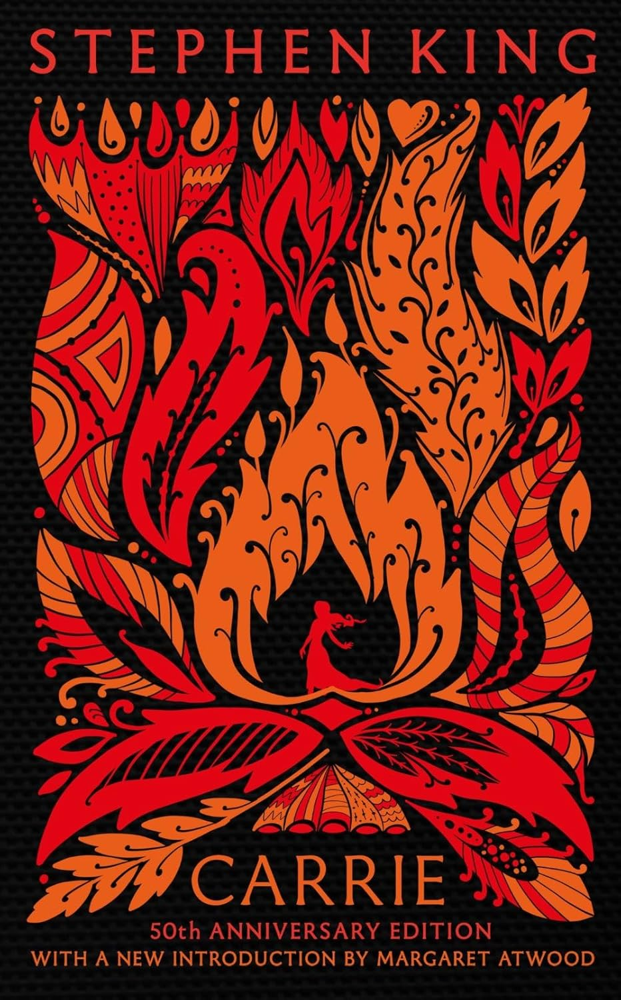
I got the 50th Anniversary Edition of the Novel. Sometimes you do judge the book by it's cover and this one was so pretty that it took Carrie off my TBR list.
Carrie is the story of a teenage girl called Carrietta (Carrie) White. Carrie is slightly overwheight, doesn't really take care of her appearence and is extremely religious. This makes her an easy target for other kids in her school. Carrie is also special, she has telekinetic powers that allow her to control objects around her with her mind. Through out the book, we learn about Carrie, her upbringing, her relationship with her abusive mother Margaret and the event that comes to be known as the Black Prom. The story is told via traditional narration, transcripts from books, news articles and interviews relating to the events of the Black Prom.
Carrie's story is relatively simple. The girl, who is a constant victim of abuse by her religious fanatic of a mother, is pushed to a breaking point after being made fun of by the other girls after having her first period by throwing various hygienic products at her. The stress of this very traumatic event leads Carrie to learning more about her telekinetic abilities and tries to control them dileberatly. Carrie has previously used her powers on accident as a child. As a child after her mom yells at her for interacting with a neighbour, rocks start falling from the sky on the White's house. The girls that bullied Carrie are punished by gym teacher Rita Desjardin. Chris Hargenson, one of the most popular girls in school, lashes out and bails on this punishment which forces the school faculty to ban her from going to prom. Sue Snell, Chris' friend, feeling regret fr her actions towards Carrie, convinces her boyfriend Tommy Ross to take Carrie to prom in her stead. Chris convinces her disturbed boyfriend Billy Nolan to help her get revenge on Carrie as she seess her as the reason why she is being punished. Tommy takes Carrie to prom where she starts feeling included by her peers. Tommy and Carrie are elected prom King and Queen after Chris rigs the votes and at the moment of the coronation, Chris and Billy dump a buckt of pig blood on Carrie. Carrie then uses her telekinetic powers destroy the gymnasium where prom was taking place. She sets curtains and bleachers alaze, triggers water sprinklers and uses electrical equipment to eletrocute most of her classmates and school staff. She makes her way home while causing destruction to the city center. Multiple explosions occur in her path from both fire hydrants and the gas network. At home, Margaret tries to kill her daughter by stabbing her in the shoulder with a kitchen knife. Carrie stops Margaret's heart with her powers. Finally, Carrie makes her way towards the roadhouse where Chris and Bily are preparin to run from town. After Billy tries to run her over, Carrie throws his car against a wall killing both him and Chris. Sue, who has been tracking Carrie following a telepathic energy she projects, arrives at the scene and invites Carrie to search her mind where she sees Sue had no ill intentions towards her. While still telepathically linked, Sue experiences Carries final moments as she dies. The town never recovers from the destruction caused on the night of the Black Prom, with over 440 casualties, most of them young teenagers.
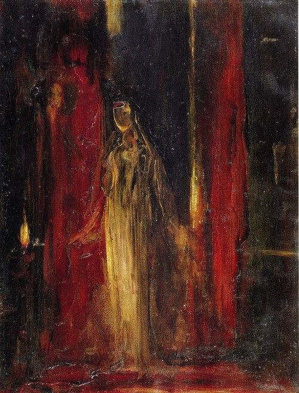
I loved the way the story is told. In this world, the Black Prom has become a tragic event that fosters speculation and theories. Multiple papers, books and articles are written about that night and they are presented to us as if the author has carefully selected the most relevant bits of each one in order to tell Carrie's story as acurately as possible. We do inhabit Carrie's POV as well as her mothers and Sue Snell, one of Carrie's classmates and one of the few survivors. When thinking about an adaptation, I think my dream adaptation would be a mockumentary with interviews, recreations and candid footage. Unfortunately no adaptation ever did this (even if in 2026 they almost tricked me into believing they were going for something like that). I was really invested in it. It's a pretty short book, but really effective in it's message. I also found it really curious how most of the book is told from the future. While telling us about how Carrie is making her dress for prom, the action is interrupted to tell us about her multiple victims. While reading, I felt for Carie, I rooted for her and felt happy for her when she finally arrived at prom and was having fun, but the constant reminders of howtragic prom was leave a lingering feeling of sorrow. It is inevitable, you know what Carrie will do from the start and how much damage she will cause. But I still couldn't help thinking "maybe it will all work out" which made this a very effective story.
But I still wanted more, so I started going through all Carrie adaptations. Starting with...
Carrie (1976)
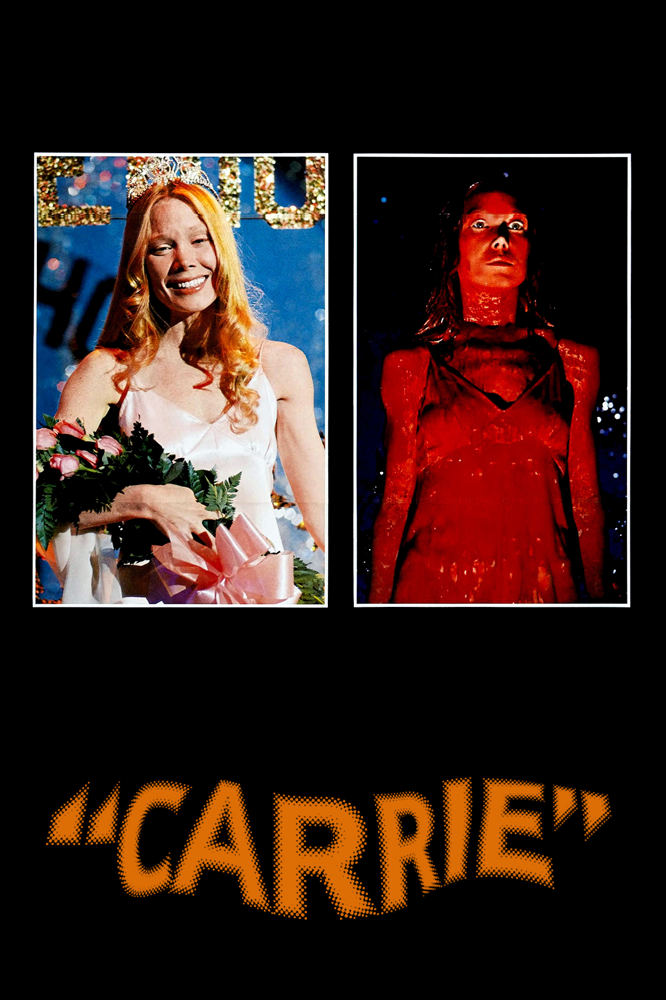
The first adaptation of the story came out only two years after the book. Directed by Brian De Palma, this one set the standart for what a good Carrie adaptation needs to do. You meet Carrie, she's bullied, you feel sorry for her, give her a sliver of hope at prom and dump her dreams of acceptance as a bucket of blood on her head. She causes massive amounts of damage around the town, kills her bullies, confronts her mother and dies. These are probably the bare minimums for a successful adaptation.
I liked a lot of things in this version. Margaret's religious fanatism is put on display with great accuracy which is something I feared would be numbed in a movie adaptation. The book is very clear on it's position on christian extremism and I figured some folks would find a way to make it say the movie was anti-christian somehow. The book criticizes the way extreme beliefs can be used as a scape goat for cruel actions.
I loved the confrontation between Carrie and Margaret where Carrie expresses her desire to go to prom. Remember when things could be dark but you could still tell what's going on? Sissy Spacek gives a great performance as the awkward teenager and her iconic expression during the mayhem at prom with her back strightened and wide eyes contrasts with the meek girl we meet at the begining of the film who looks at the ground all the time and seems to coil around herself.
I think the movie still has some issues, like the punishment from Ms. Collins (Desjardins' name is changed for... reasons...) that I think takes too long. And I confess that on first viewing I din't love the split screen on prom night, it felt jarring and odd. But it's been growing on me, it's an interesting way to show multiple angles at once and make the sequence feel more alive and messy.
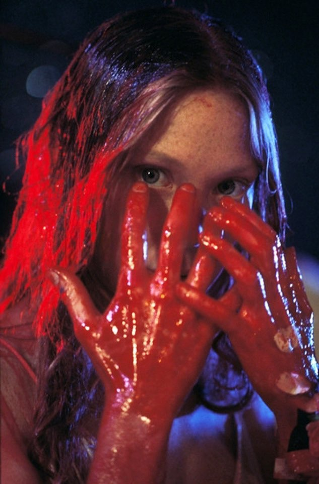
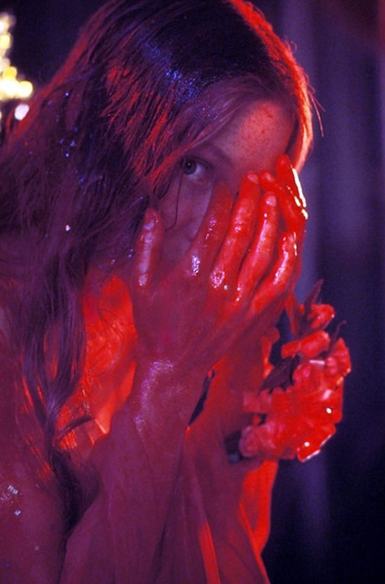
This version of the story limits the destruction to the gym. I prefer the destruction of the whole city. It brings Carrie's rage beyond the school and shows how she ends up going too far, but the message is there. Overall this movie keeps the themes from King's book and retells the story with clever cinematography wen if some scenes that stay a little too long damaging the overall pacing of the film.
Still, you can tell why this is a classic. Even with it's wonky pancing, it is a good film and definitly worth your time.
The Rage: Carrie 2
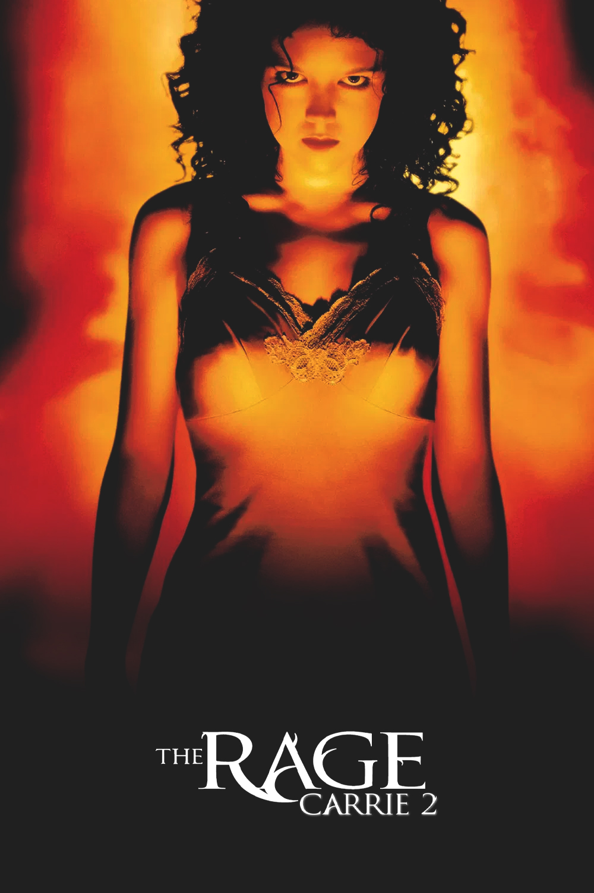
Does this count as a Carrie adaptation? I don't know. It is called "Carrie 2" and marketed as a direct sequel to the '76 movie so I put it on the list. And I'm glad I did because this movie is hilarious. It's in the "so bad it's good" level of film. Everyone in this movie is an idiot and it makes no sense.
The movie came out twenty-three years after De Palma's adaptation. It tells the story of Rachel, a girl that like Carrie has developed telekinetic powers. After her best-friend commits suicide, Rachel tries to find out what drove her to that decision. Amy Irving returns as Sue Snell for the B-plot of the movie where she finds Rachel's mom and finds out Rachel is actually Carrie's half-sister.
I think it's important to note that everything in this movie takes place in about 2 weeks. Rachel's best friend, Lisa, has recently hooked up with one of the school jocks, Eric, and is very much in love with him. In reality, the jocks are playing a very cruel game where the set "bounties" on girls via points and whoever manages to sleep with those girls gets the associated points. After finding out about this, Lisa jumps off the roof. The movie then takes absolutely no time to linger on this and moves on to Rachel trying to find out what drove Lisa to suicide. When I say no time, I mean no time at all. The girl's body is still in the parking lot when announcement tells everyone to go inside. After a minute of silence, they go back to class. That's when I realised that this was gonna be a fun time. Rachel eventually falls in love with one of the jocks, Jesse, the only one who isn't an absolute piece of human garbage. Rachel finds a photo proving a connection between Eric and Lisa so they start harrasing her by going to her house and being creeps. When Jesse and Rachel hook up, the jocks end up recording them.The final prom scene is replaced for an house party where the video of Jesse and Rachel is played on multiple screens. Rachel then snaps and kills a bunch of people (including Sue Snell) in various hilariously gory and ridiculous ways.
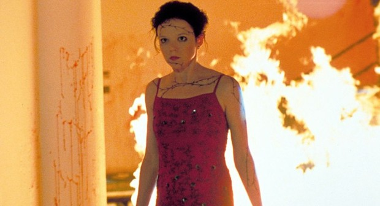
I was unable to take this movie seriously. Everyone is an idiot and cartoonishly evil. The adults are terrible people. After finding out the jocks are playing this incredibly cruel game, they decide to do nothing to not jeopardize their future carrers. And just when I thought the movie could turn around a become a good representation of jock culture and the objectification of women, they make the most obnoxious cut of random frames that kill the mood for the whole thing. As a Carrie story (even if loosly connected), everyone of these pricks deserves to die but the logic in this world is so stupid that I can't take it serious. The editing is nauseating and weird. One of the character's biggest problem (a girl Jesse rejected) when she finds out that Jesse is dating Rachel her biggest problem with it is that she isn't hot enough. It's so cartoonishly evil it takes all tension away and makes everything hilarious.
I won't say "watch this movie" but if you're ever bored on a friday night call some friends and have some fun with this mess of a movie.
Carrie (2002)
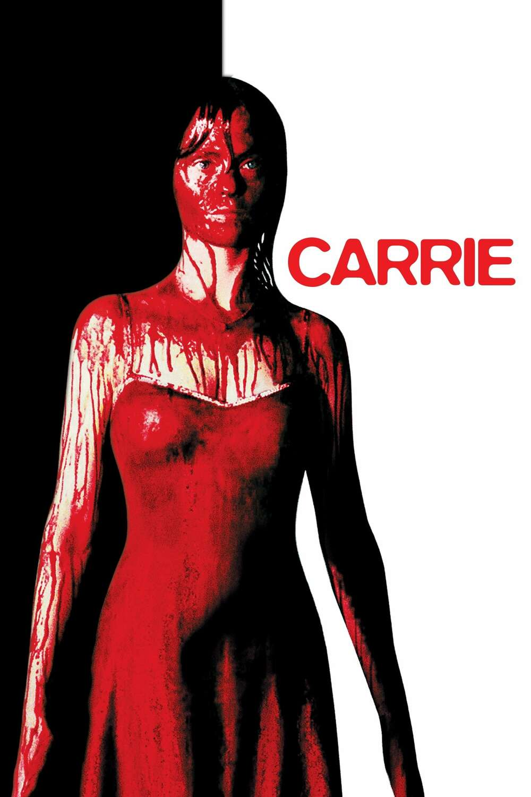
This was a TV movie so it had a smaller budget and tried to set up a sequel. It's by far the weakest of the adaptations. At least, it's my least favorite. Unlike the 1976 adaptations, it isn't a good adaptation that I can enjoy for what it is and unlike the 1999 sequel to that it isn't entertaining enough for me to enjoy ironically. It's just incredibly boring.
I think the kids that bully Carrie and ultimately drop blood on her in the book are more "evil stupid kids" instead of "raging sociopaths". This adaptation dives full on the sociopathy. It feels over the top and ridiculous. The characters don't feel like real people, more like caricatures of what these characters should be. In the book and previous adaptations you can see what made Carrie a target, why they would choose her totorment.
I have other grievances with this version of the story: Carrie is very capable and powerful from the very start. I enjoyed seeing her explore her powers, her curiosity about it makes her relatable in a way. The music the whole time, is so early 2000's it hurts. The hiphop beats don't fit the mood and kill the tension of 90% of the scenes. I don't like that Carrie sees the bucket fall on her instead of it being a surprised when the blood drops on her. I don't like the dream sequence dance that feels useless and reiterates things we already know. I don't like the tampons in the locker that feel premeditated and cruel making every kid look more sociopathic instead of just a single moment of peer presure in the locker room. I don't like the pretty dated sound effects or the ungodly amount of blood that fits in that bucket (was she prayed with a hose?), and even with all that blood it managed to perfectly miss her eyes how curious. But I especially don't like that she lives. Carrie dying in the end is what makes the story a tragedy. This sets up a sequel that never came and makes it a pretty unsatisfying ending.
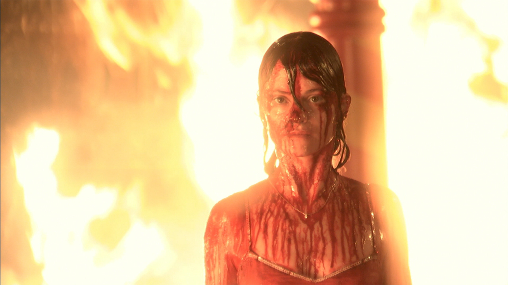
But most of all it's boring. I don't care about anyone in this story, not Carrie and not her victims. I don't care about these people at all.
Carrie (2013)
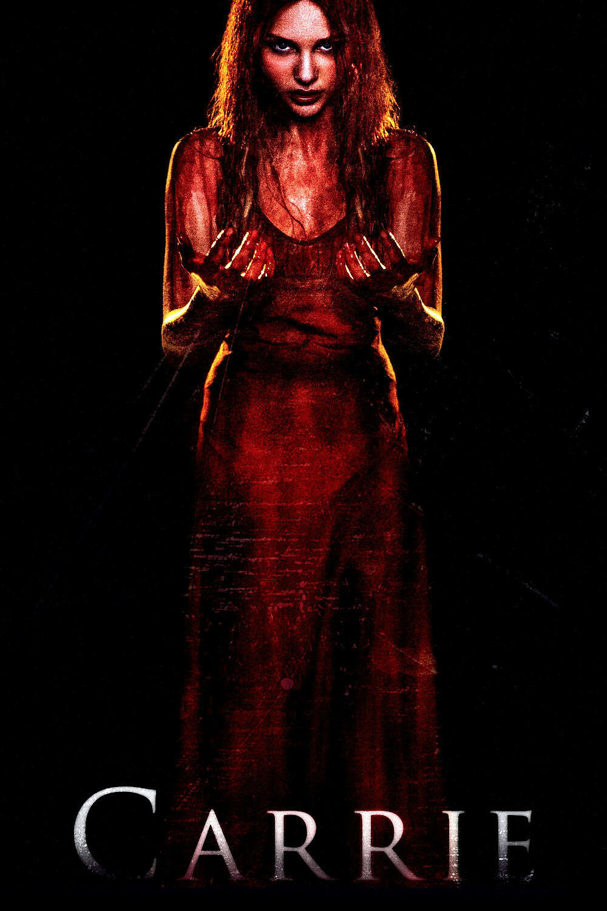
I saw some reviews for this movie calling it the worst adaptation of Carrie. I was pleasantly surprised with this. It's not a great Carrie adaptation granted, but it's a better movie than the 2002 adaptation and honestly after seeing that one, reading that this one could be worse scared me.
This still has some flaws like the kids that are overly cruel and psicopathic, the introduction of social media that feels unnecessary and was handled poorly. Also everyne in this is stupidly attractive, including Carrie. Asking me to believe these people bully Carrie for not being attrative is pushing my suspenssion of disbelief to its limits. You can't have a "she's actually pretty" moment if she was always pretty to begin with (if you're gonna go for a cliché, at least do it right).
The fundamental mistake all these adaptations make is having Chris be mean to Carrie before she's forbidden from going to prom. Chris is entitled, and the bloodbath she gives Carrie is her acting out because she isn't allowed to go to prom. In the book, Chris hates Carrie because she sees her as the reason she is being punished, not because of her own actions. Lashing out at Carrie with a bucket of blood is a reaction. Both in this adaptation and in the '02 adaptation, she is a bitch to Carrie just because. Posting the video of Carrie online (or putting tampons in her locker, like in the '02 adaptation) happens before she is punished. It's not totally unrealistic (some kids are just dicks), but I preferred it in the original story, where she acts out as a reaction to being banned from prom, because that way I could see Chris as an entitled girl who thinks herself above punishment instead of just a cliché mean girl who bullies the weak for no reason.
Other things I don't really love: Desjardin being the one to tell Chris' dad to shove it; the pep talk to Carrie in the locker room after the first invitation, which feels unnecessary; I don't like Chris coming along for the pig butchering, and I like it even less that she's directly responsible for it. (I think it works better if she doesn't have concrete proof that Billy is crazy and is mostly superficially attracted to him as a way to rebel.) And I don't like as much how Margaret is just a complete nutcase to the point of being funny. Most of Chris' storyline is boring as hell. She and Sue don't do anything remotely memorable and turns most of their parts in the movie as a foggy mess of what it should be. Chris' warning Sue ruins what could be a supernatural premonition like feeling. Like she gets in the book (also that text would've been evidence if they were to be caught making Chris even stupider). And the hat on a hat that is projecting the video during prom (the whole recorded video that was then uploaded online feels like a weak attempt to modernize the story, The video does nothing to raise the stakes making it's existence pointless. Simple would've worked better in my opinion).
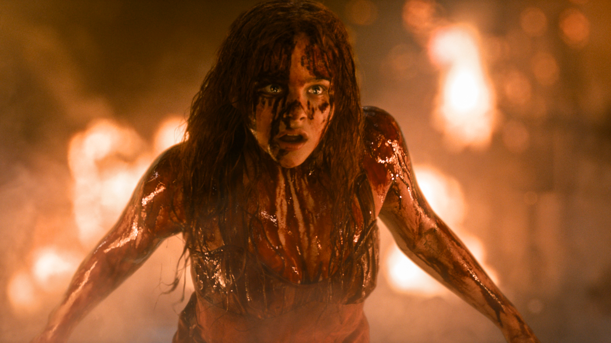
I do like that Carrie actually trains her powers before using them (the sewing machine working itself was pretty cool), and that she has more time with Tommy, establishing that they could maybe work together and that there is a hint of attraction from both sides, I also think that was planned as a way to cash grab as it being a possible romance movie but it's not amazing, pretty simple all things considered. Today this movie would be clipped as romance bait on tiktok.
This Carrie also moves a lot more, she moves her arms around when using her powers. I'm not totally against it, but I think Spacek nailed the ominous, terrifying way Carrie acted in the book, mostly just conveying her actual direction with her eyes. Chloë Grace Moretz's version of Carrie has some interesting elements. The floating blood is cool, the stupid blast of energy is not. I like that this Carrie isn't seizuring while using her powers but throwing things around and blasting stuff around feels a little too over the top for me to find compelling. I am a bigger fan of the force of nature Carrie than the supernatural avenger Carrie. It seems to be fulfilling a sort of revenge fantasy instead of being a cautionary tale which is the main reason so may people seem to dislike this version of the story.
I don't hate this adaptation of the story but I don't love it either. It has some elements I enjoy, some I don't totally love but that just makes it a forgetful movie. It has some neat ideas.
Carrie (2026-)
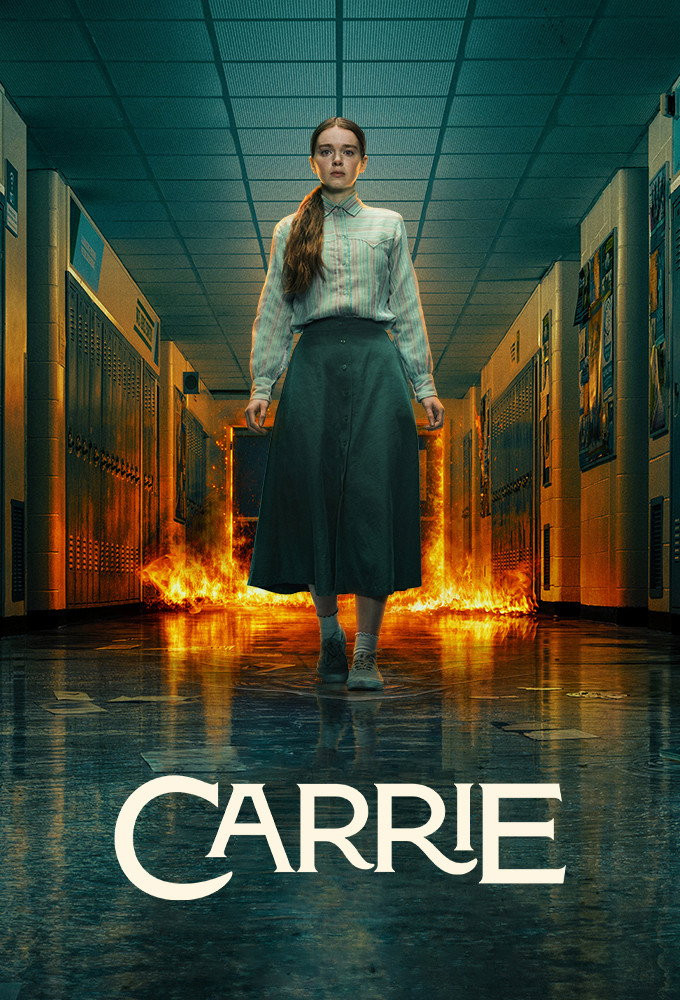
It feels incredibly sad to have to put a little '-' next to 2026. Mike Flanagan's Carrie was a perfect adaptation of Carrie that brought the story to the XXI century. But that amazing build up ends up not paying off as all the emotional connection I had to the characters is thrown away for the sake of setting up a sequel wwith characters I don't know and don't care about.
At the start, this was a modern, different version of King’s original story. It introduced social media in a very clever, smart and relatable ways that could tell to a new audience the same story with a very interesting twist. This version of Carrie had the added benefit of having a wide, talented cast of young actors that did a very good job. But the last episode loses the plot to set up a second season making me lose interest in how it turns out.
I came expecting a tragic, sad and at times cathartic story about empathy, the dangers of extremist thinking (in the book religious, in this some arguably political and isolationist) and instead I was teased for 7-ish good episodes for a sudden derail to an attempt to bring back Stranger Things.
A real shame because I truly did enjoy everything else about this adaptation. It was a near perfect version if the story derailed at the last minute. I wanted to love this so much man, the drama was on point, the powers were great, and then all of a sudden all the tiny bits I was liking less suddenly took the spotlight.
As I watched, I kept shot notes for each episode, some written as I watched. You can read them here but do keep in mind that these are more like stream of consciousness than actual reviews. Reading back, it's funny to see where I thought the show was going.
At first this was a retelling for the modern audiences of the classic Carrie story. Themes of school shootings, social media, drinking, drugs, children of divorce and cyberbullying take a bigger focus in this version of the story that given the longer runtime provides for a very realistic, thoughtful and carefully thought out look at modern teenage life. This version of Carrie is joining school and all her schoolmates for the first time at the start of the story, a choice I actually liked. One of my issues with the ‘02 and ‘13 adaptations was how Chris and sometimes others would bully Carrie in very extreme ways for no reason, or maybe just because it was funny. Both in the book and the ‘76 adaptation Carrie is selected as a bigger target for bullying because Chris blames Carrie for her being forbidden from going to prom or having to do drills with Ms. Desjardin. Having Carrie, Chris, Sue and others start from a clean slate allows us to see what exactly drove others to select Carrie as a target. In this case her complete alienation from the rest of the world. Not being aware of school shootings, or the internet, or her own menstrual cycle.
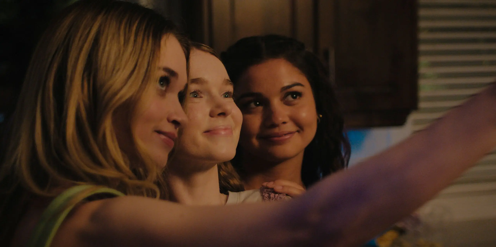
I want to praise how Christine Hargenson is handled in this version of the story. Chris is prideful, arrogant and a terrible person. But she’s a real person. You may disagree with her and hate her for how she decides to lash out against the world but she at least feels human. Her parents divorce and her dads problems with his work suddenly change her life around completely leaving her alone and lost. She finds comfort in Billy Nolan (also adapted perfectly) who shares her distorted world view and escalates her behavior. Chris is evil but throughout the story you can see how she is also a lost kid that at some point was beyond help. Alison Thornton gave a great performance and made me feel the most sympathetic for this character I ever felt. She made Chris human and that’s one of the things that saved this adaptation. Sue Snell on the other hand seems to be pushed a little more to the background. Sue isn’t as big a character in the story as I thought she would be and by the end of the story (when she arguably takes the role of secondary protagonist in the book) she might as well not have been there at all as her presence changed nothing. There was a lot of potential to Siena Gudong’s Sue but they took away her agency from the book, but given how the ending was adapted, I’m not surprised. Tommy Ross and Billy Nolan were never huge in the book but I did enjoy their short presence on the show. I loved the idea of Tommy and Carrie sharing a “what-if” night of romance during prom, but the let’s go as friends version this adaptation takes works for this version of the story. Billy is also given some of Chris’s humanization treatment which I appreciate. The 02 and 13 adaptations seemed to like the idea of having Billy be a complete sociopath that always confused me as to how the hell did Chris ever feel attracted to such a maniac. In this he is the bad kid she hangs out to piss off her dad in a more relatable way.
This version of the story extends the week or so between the locker room incident to prom in the book to about a semester. This gives characters like the principal (played by the great Matthew Lillard) and Rita Desjardin (Amber Midthunder (badass name)) a little more time to shine. In this adaptation, Chris uses instagram to create an account where she bullies students and faculty members with photos and videos of them in private moments where they are at their most vulnerable. The consequences of this become larger and larger and end up being a giant problem for both students and faculty. This escalates in fights, bullying, some kids are pushed out of the closet causing them to be shunned by their family and a case of sexual misconduct between a teacher and a student comes out. This escalates over time and ends up putting Chris and Carrie in direct confrontation, both them and their parents. Chris’s home life that has been crumbling since the start of the show is an interesting plotline that was honestly very fun to follow. Her dad, the lawyer desperately trying to keep a straight face as his business malpractice comes to light and his strong man attitude isn’t fixing the problem and her mom who recently left him for a new family that Chris resents.
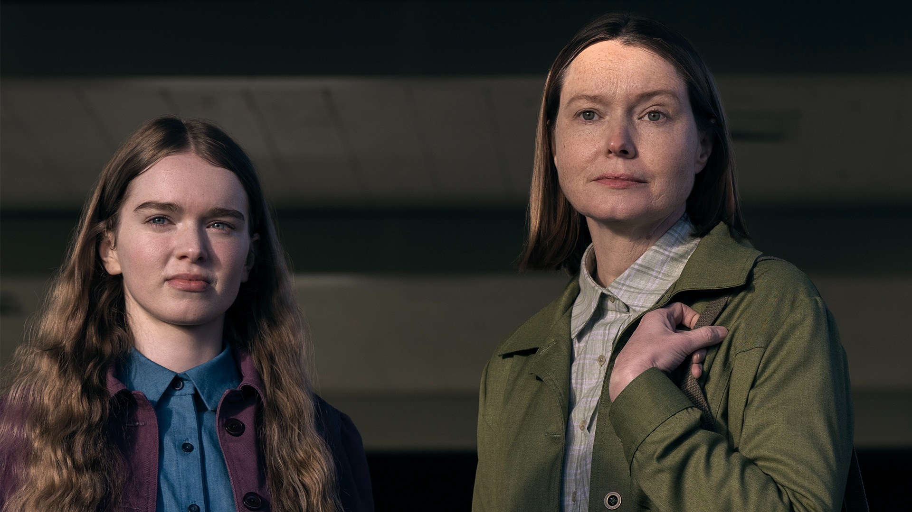
Margaret White, the delusional and abusive religious fanatic is turned into an overprotective and still abusive Karen. This modernization of Margaret is great. Samantha Sloyan gives a great performance of a disillusioned mother that truly believes she is saving her daughter while being an absolutely terrible person. You can see how Margaret works and how in her mind she and she alone knows what is best for her daughter and in that way she is very faithful to the original character. She did lose her religious fanaticism. Not completely, there is still the infamous prayer closet and she still uses God as the absolute rule to justify her decisions (in a very american extremist christian way that I found fascinating) but not nearly as much as I think she needed to be. Those extreme christian views are fundamental to her character and are what lead Carrie to a church during her massacre in the book, one of my favorite bits that to this day was never adapted. For what Sloyan’s Margaret loses in christian craziness she gains in modern Karen. The woman who thinks she is above all and always morally correct even when she is down right awful. Her campaign to get punishment for Chris is a great portrait of that particular kind of american self-righteous nutjob.
My final acting praises and the most deserved ones go for Summer Howell’s portrayal of Carrieta White. I love this Carrie. I don’t want to linger on appearance too long, but in my head Carrie as I read the book was never an ugly girl. I sometimes see comments that want Carie to be straight up fat, ugly and filled with acne, but to me, the perfect Carrie is a very beautiful girl who dresses conservatively, doesn’t really care for her appearance, has bad posture and low self-esteem. She’s not immediately repulsive but she’s not a super model either. A regular girl. And I love how Howell’s version of Carrie dresses in muted brown long skirts, has really long hair and feels awkward, skittish and weird. She’s an outcast. Carrie in this version of the story starts getting involved with the other kids a lot earlier than prom (something I don’t love but worked well for the story this version is trying to tell). She goes to parties, gets drunk and even accidentally tries weed gummies. Howell plays her with the charm of a newborn deer finding out about the world that I really liked. As the story goes on, Carrie grows a lot. She is straight up confrontational to Chris and Margaret and grows some confidence, also a deviation from what King’s original story was. Extending the story forced a lot of changes. It adapts the mythos of the story and borrows elements from it as they see it necessary. So I am not particularly bothered by this version of Carrie being so confrontational, if they were to follow King’s story directly, doing that would have been sacrilege but it was clear from early on that this was telling it's own version of the story while keeping the most relevant elements.
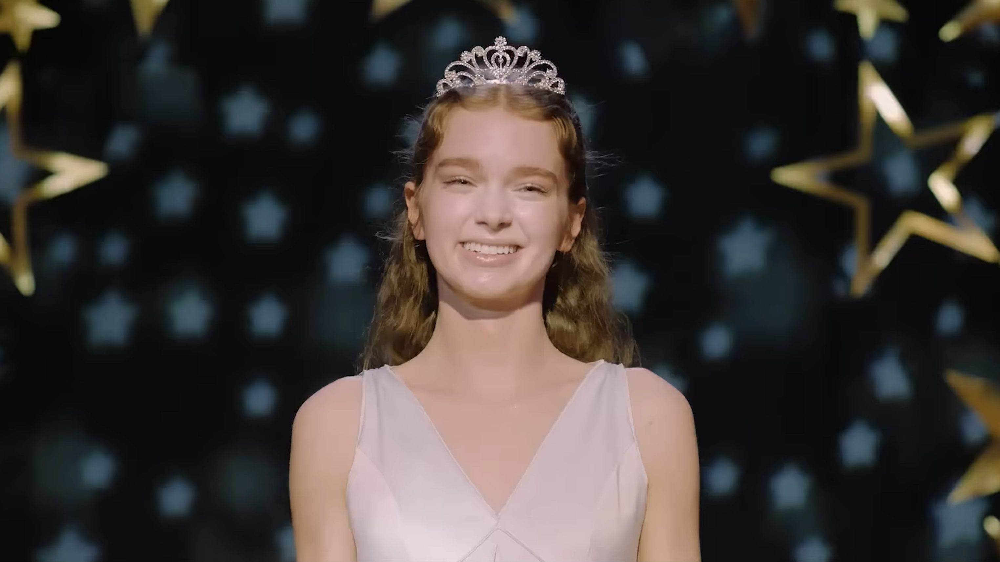
In more technical things, scenes at night are very dark (when they aren’t lit by giant blazes). Episode 4 has a lot of those and it was hard to understand what was going on. The effects are good, some objects feel odd here and there but they saved the budget for the action filled finale and in that department at least, I can say I enjoyed it. Fire, explosions, cracks in the ground, cars flying around, all great. The cracks on the ground Carrie leaves as she walks is such a cool element I wish it got more attention during the finale. It was teased in an earlier episode and it showed the terrifying power Carrie has. Like the floating blood in the 2013 adaptation, I really liked that.
The music is sometimes distracting. I noted a particular moment in episode 4 where Sue and Carrie are having a heart to heart as music plays in the background. The music is distracting, the scene would have played better in silence or with a more emotional instrumental track. I always hope for a great score but the only one I remember enjoying was Carrie’s theme that sometimes played in credits or small moments, it wasn’t that memorable. The whole soundtrack feels like a weird choice of jumbled indie songs that sometimes don’t fit the tone of the scenes they are playing in. They do have some nice needle drops on occasion but they are few and far between.
My absolute criticism of this is the incredibly forced push for a sequel. The last episode loses the plot to set up a second season making me lose interest in how it turns out. I came expecting a tragic, sad and at times cathartic story about empathy, the dangers of extremist thinking (in the book religious, in this some arguably political and isolationist) and instead I was teased for 7-ish good episodes for a sudden derail to an attempt to bring back Stranger Things. The interviews that at first I thought were a callback to the testimonies King presents in the book, are part of a cover-up by a group trying to stop both Carrie and Emaline (at least those two). I don’t know who the interviewer lady [Adelaide according to the subtitles] was, I don’t know what she wants or what she’s doing here and I couldn’t care less. Emaline, as a character, always left me apprehensive.
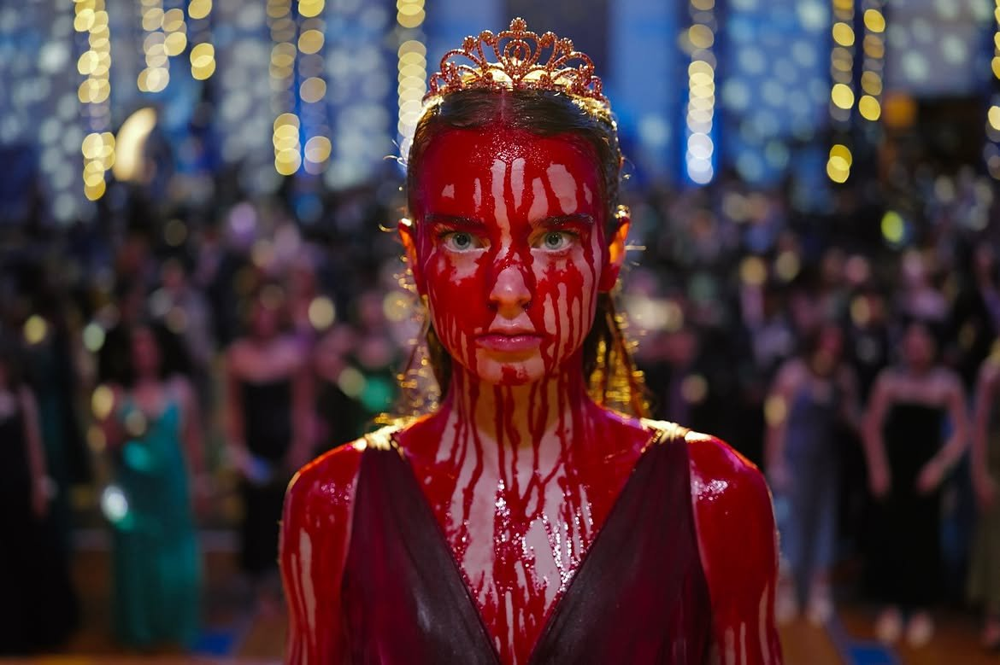
I found her introduction odd and a deviation from the main story since she wasn’t involved with any other character than Carrie and wasn’t involved with any of the Carrie Red plotline that had at this point been the main focus of the narrative. I was a little mad when she started helping Carrie train her powers since I always enjoyed the idea of Carrie using her powers alone and training them alone made her more terrifying for her victims in the finale. I didn’t like her pushing Carrie to use her powers on Chris before the finale since Carrie was mostly a loner who would avoid direct confrontation and that felt odd to her character (even if it moved the plot along and gave Chris a reason to antagonize Carie even more justifying that episode in this adaptation). But most of those worries went away with the realization that she wasn’t actually there. Emaline went from character deviating the narrative to Carrie’s powers personified, a physical and visual representation of the repressed desire to destroy and use her powers to bring vengeance upon those who hurt her.
In the finale, they not only bring Emaline back but they reveal that she is actually a real person astral projecting herself to Carrie. Carrie in the infamous massacre of the black prom lets Emaline “take control” losing all agency in THE moment she takes agency in the original mythos. After that moment, the finale lost all the hype that it had built up. Yes, the destruction is visually interesting, well executed and brutal but it means nothing if Emaline, a character whose motivations aren’t clear to us, is the one taking the reins. Carrie regains control, goes home and is attacked by her mom. Carrie brings the house down and drags herself out of the rubble but both she and Margaret survive. So in essence, Carrie is innocent, she killed no one. The only person she attacked with her powers with the intent to kill without giving control to Emaline was Margaret. And even Margaret didn’t die. Carrie and Emaldine leave for God knows where running away from the interviewer lady and her lackeys. The interviewer is the one who stops Margaret’s heart telepathically (something Carrie originally did in the book) which I did not like at all (again, who is this lady?). And on top of that she has the audacity to call her power Shine, a term coined by Dick Hallorann, the chef from the Overlook Hotel from the Shining. To be able to call it that, that lady would’ve had to have met another character from the Shining or Doctor Sleep, which would go against that argument of hers that only women can use the power since, you know, those two male characters famously have the shining… It’s frustrating.
This didn’t end as I wanted it to. I’m kind of sad that things can’t just be what they are anymore; everything needs a sequel and nothing can ever truly end. No more happy endings, no more sad endings, no more endings. A real shame because I truly did enjoy everything else about this adaptation. It was a near perfect reimagined version of the story that introduced multiple themes that feel relatable to a modern teenage audience and visually looks good. I loved the shot in episode one of Carrie walking barefoot as the floor cracks behind her. I loved the fire and destruction of the prom. I loved the drama and the way each character felt involved in that drama. It just sucks that this stinks of a shameless attempt to make another franchise. A thing most Carrie adaptations suffer from. The '76 movie eventually got an unecessary sequel, the 2002 movie let Carrie live like in 2026 to prep a sequel that never came to fruition. I can only hope that the eventual season two (that was announced a few days ago) can somehow create an interesting plotline. I can't really say I won't watch it, I've come to enjoy Summer's performance enough to try give her the benefit of the doubt, but I am really aprehensive about it and it would take a lot to salvage the story where it is right now.
This was an interesting experience for me. I often write notes of reviews like this for myself to sort out the way I love some movie, book, show or game. But for the first time I figured I should actually put these out in the world somewhere to honor the things I love. Because I do love these. I love Carrie. And the more I watched the more I saw the appeal of the mythos around it. The simplicity of the story leaves a lot of room for experimentation, creative interpretations and fun explorations of the characters. I don't know if I'll ever put another one of these texts out there for the world to see, I don't even think anyone will read this whole thing (it turned out a lot longer thatn I wanted it to) and if you did thank you very much. This was a lot of fun.
Tomás Ferreira
October 30th, 2026